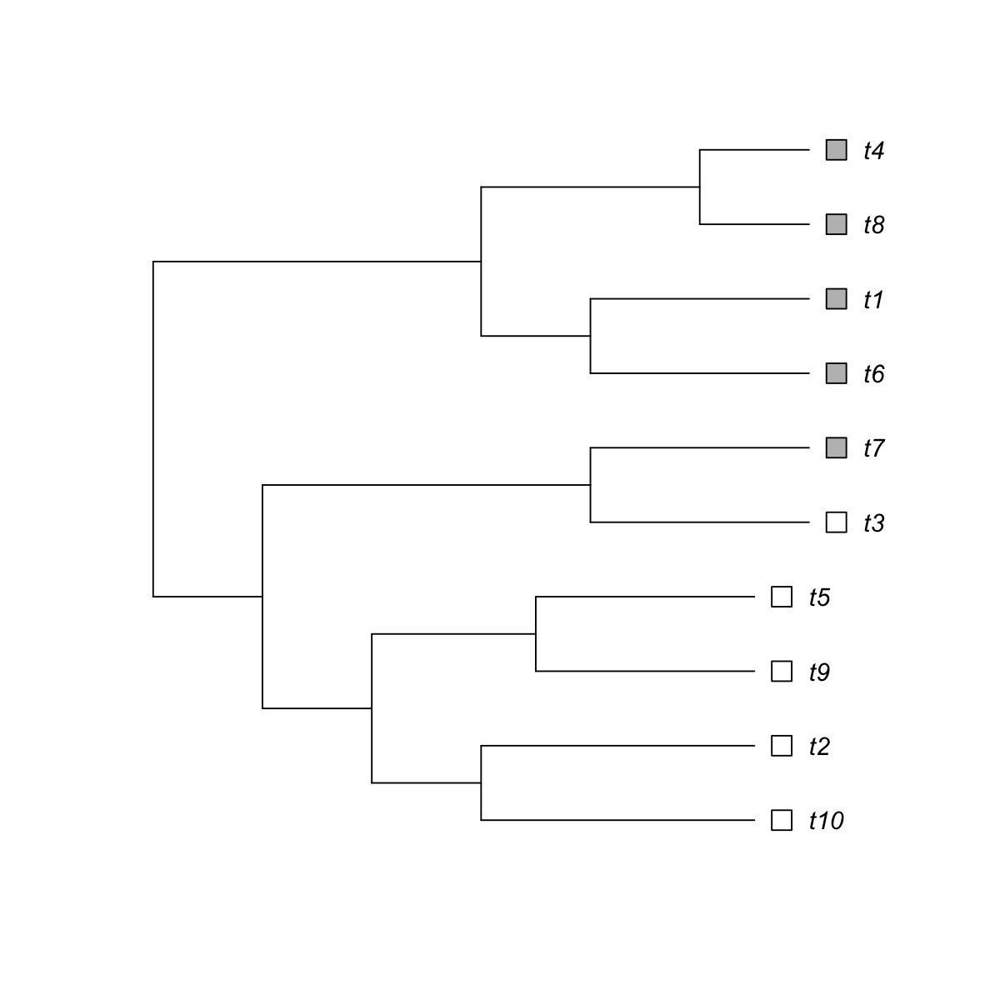
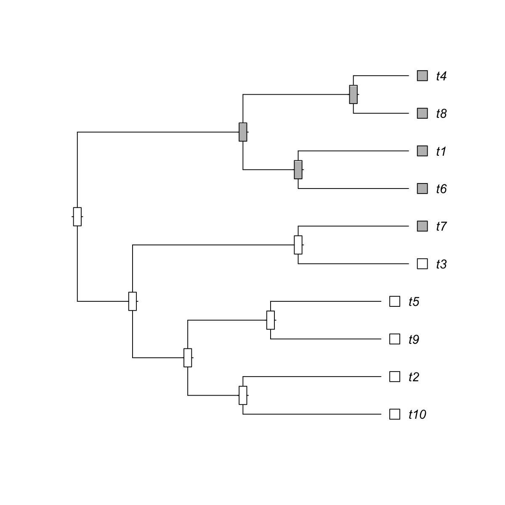
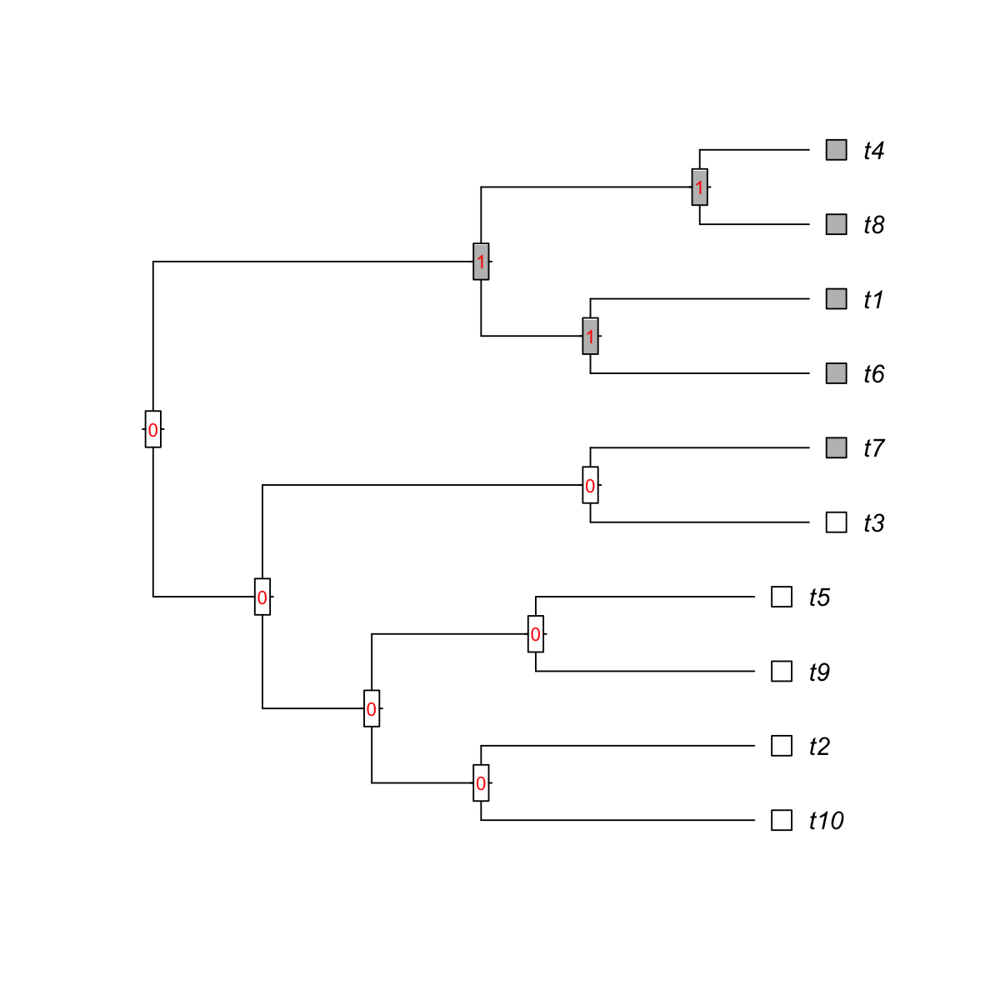

dcAncestralML is supposed to reconstruct ancestral discrete
states using fast maximum likelihood algorithm. It takes inputs both
the phylo-formatted tree and discrete states in the tips. The algorithm
assumes that state changes can be described by a probablistic
reversible model. It first determines transition matrix between states
(also considering branch lengths), then uses dynamic programming (from
tips to the root) to estimate conditional maximum likelihood, and
finally reconstructs the ancestral states (from the root to tips). If
the ties occur at the root, the state at the root is set to the last
state in ties (for example, usually being 'present' for
'present'-'absent' two states).
dcAncestralML(data, phy, transition.model = c("different", "symmetric", "same", "customised"),
customised.model = NULL, edge.length.power = 1, initial.estimate = 0.1, output.detail = F,
parallel = T, multicores = NULL, verbose = F)
matrix(c(0,1,2,0),2)), "symmetric" for the symmetric model (such
as matrix(c(0,1,1,0),2) or matrix(c(0,1,2,1,0,3,2,3,0),3)),
"same" for all-transition-same model (such as
matrix(c(0,1,1,0),2)), "customised" for the user-customised model
(see the next parameter)matrix(c(0,1,1,0),2), matrix(c(0,1,2,0),2), or
matrix(c(0,1,2,1,0,3,2,3,0),3)source("http://bioconductor.org/biocLite.R");
biocLite(c("foreach","doMC")). If not yet installed, this option will
be disabledIt depends on the 'output.detail'. If FALSE (by default), a matrix is returned, with the columns responding to the input data columns, and rows responding to node index in the phylo-formatted tree. If TRUE, a nested list is returned. Outer-most list is for characters (corresponding to columns of input data matrix), in which each elemenl is a list (inner-most) consisting of three components ("states", "transition" and "relative"):
states: a named vector storing states (extant and
ancestral states)
transition: an estimated transition matrix between states
relative: a matrix of nodes X states, storing conditional
maximum likelihood being relative to each state
This fast dynamic programming for ancestral discrete state reconstruction is partially inspired by a joint estimation procedure as described in http://mbe.oxfordjournals.org/content/17/6/890.full
# 1) provide the phylo-formatted tree tree <- "((((t10:5,t2:5):2,(t9:4,t5:4):3):2,(t3:4,t7:4):6):2,((t6:4,t1:4):2,(t8:2,t4:2):4):6);" phy <- ape::read.tree(text=paste(tree, collapse="")) # 2) an input data matrix storing discrete states for tips (in rows) X two characters (in columns) data1 <- matrix(c(0,rep(1,4),rep(0,5)), ncol=1) data2 <- matrix(c(0,rep(0,4),rep(1,5)), ncol=1) data <- cbind(data1, data2) colnames(data) <- c("C1", "C2") ## reconstruct ancestral states, without detailed output res <- dcAncestralML(data, phy, parallel=FALSE) resC1 C2 1 "0" "0" 2 "1" "0" 3 "1" "0" 4 "1" "0" 5 "1" "0" 6 "0" "1" 7 "0" "1" 8 "0" "1" 9 "0" "1" 10 "0" "1" 11 "1" "0" 12 "1" "0" 13 "1" "0" 14 "1" "0" 15 "1" "0" 16 "1" "0" 17 "0" "1" 18 "0" "1" 19 "0" "1"# 3) an input data matrix storing discrete states for tips (in rows) X only one character data <- matrix(c(0,rep(0,4),rep(1,5)), ncol=1) ## reconstruct ancestral states, with detailed output res <- dcAncestralML(data, phy, parallel=FALSE, output.detail=TRUE, verbose=TRUE)The input tree has '10' tips. 1 out of 1 (2014-10-24 20:09:56) First, estimate the transition matrix based on the 'different' model and initial estimate '0.10' (2014-10-24 20:09:56) ... Second, estimate conditional maximum likelihood in a bottom-up manner (2014-10-24 20:09:56) ... Finally, reconstruct ancestral states in a top-down manner (2014-10-24 20:09:56) ... In summary, the number of between-state changes: 0->1: 2 1->1: 6 0->0: 10res[[1]] [[1]]$states 1 2 3 4 5 6 7 8 9 10 11 12 13 14 15 16 17 18 19 "0" "0" "0" "0" "0" "1" "1" "1" "1" "1" "0" "0" "0" "0" "0" "0" "1" "1" "1" [[1]]$transition 0 1 0 0.9508 0.04922 1 0.0000 1.00000 [[1]]$relative 0 1 1 1.00000 0.0000 2 1.00000 0.0000 3 1.00000 0.0000 4 1.00000 0.0000 5 1.00000 0.0000 6 0.04691 0.9531 7 0.04691 0.9531 8 0.04691 0.9531 9 0.04691 0.9531 10 0.04691 0.9531 11 1.00000 0.0000 12 1.00000 0.0000 13 1.00000 0.0000 14 1.00000 0.0000 15 1.00000 0.0000 16 1.00000 0.0000 17 0.04691 0.9531 18 0.04691 0.9531 19 0.04691 0.9531## get the inner-most list res <- res[[1]] ## visualise the tree with ancestral states and their conditional probability Ntip <- ape::Ntip(phy) Nnode <- ape::Nnode(phy) color <- c("white","gray") ## visualise main tree ape::plot.phylo(phy, type="p", use.edge.length=TRUE, label.offset=1, show.tip.label=TRUE, show.node.label=FALSE)## visualise tips (state 1 in gray, state 0 in white) x <- data[,1] ape::tiplabels(pch=22, bg=color[as.numeric(x)+1], cex=2, adj=1)## visualise internal nodes ### thermo bar to illustrate relative probability (state 1 in gray, state 0 in white) ape::nodelabels(thermo=res$relative[Ntip+1:Nnode,2:1], piecol=color[2:1], cex=0.75)### labeling reconstructed ancestral states ape::nodelabels(text=res$states[Ntip+1:Nnode], node=Ntip+1:Nnode, frame="none", col="red", bg="transparent", cex=0.75)
){kind=link}
){kind=link}
){kind=link}
){kind=link}